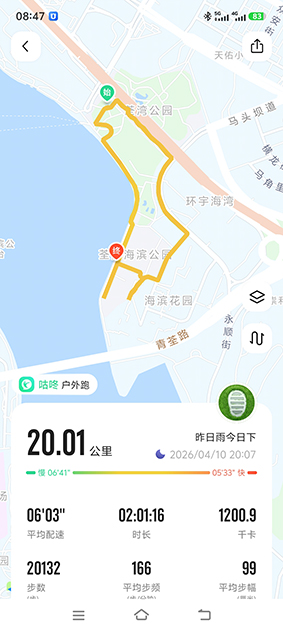

咕咚20km运动数据定制 · 荃湾海滨公园环线

本次数据定制覆盖荃湾海滨公园至环宇海湾沿海环线，全程 20.01公里，平均配速 6'03"，总耗时 2小时1分16秒，消耗 1200.9千卡。
轨迹全程贴合海岸线，经过荃湾公园、海滨花园、青荃路等真实地标，无任何漂移或跳点，完美适配咕咚平台算法审核。
步频稳定在 166步/分钟，步幅 99厘米，数据自然流畅，符合真人运动节奏。
✅ 轨迹真实 · 基于真实道路数据生成，无穿模、无直线漂移
✅ 算法匹配 · 严格遵循咕咚平台运动模型，数据逻辑自洽
✅ 支持定制 · 可指定地点、日期、配速区间，满足个性化需求